Task: You have to configure a secure multi-layered application environment in Oracle Solaris 11.
Lab: In this lab we will install a Wordpress blog application in Oracle Solaris 11 zones. We will create two Solaris zones: one for the database server and another for the web server. We will connect the zones via an internal virtual switch to make sure the database zone is connected to the web zone, but not visible from the outside world. The web zone will have two network interfaces: one for internal connection to the database zone and another for external connection.
Here is what we are going to build.
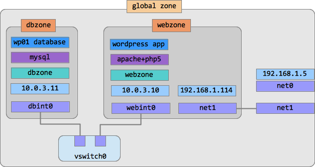The final configuration will have a database layer, a web layer, an internal virtual network inside the Solaris box to connect them, and an outside connection for clients. It's pretty typical in today's applications and we are going to use this simple model to learn some modern Oracle Solaris 11 features. You can always extend this simple example to more complex architectures.
And here is our action plan:
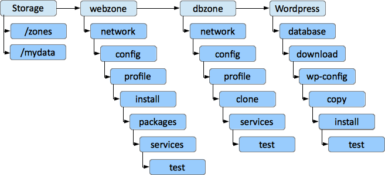We are going to perform the following steps to configure the application layer by layer.
/zoneszonecfgwebzoneLooks scary? Don't worry. You never know what you can do till you try. Let's begin!
We'll start with creating a separate ZFS filesystem to store zone root directories. It will be created in our root pool and mounted at /zones.
root@solaris:~# zfs create -o mountpoint=/zones rpool/zones
Also we are going to create a separate filesystem to store MySQL data files. We will later assign it to the database zone. This way the database zone administrator can manage this dataset separately: change its compression and deduplication parameters, create snapshots etc.
root@solaris:~# zfs create rpool/mydata
That was all for the Storage Layer.
We begin with creating a network infrastructure for the zone. It will include a virtual internal switch and two network interfaces. First network interface will be for internal communication with the database zone. Second network interface will be used for outside communications.
Let's start with the outside connection. In our example we will use the second VirtualBox network interface which is called net1 in Solaris. Check if you have two network interfaces configured in your virtual machine:
root@solaris:~# dladm show-phys LINK MEDIA STATE SPEED DUPLEX DEVICE net0 Ethernet up 1000 full e1000g0 net1 Ethernet up 1000 full e1000g1
If there is only one network interface you have to power off your virtual machine and add the second network interface using VirtualBox Manager. Configure it as "Bridged Adapter".
Use the following screenshots as a guidance.
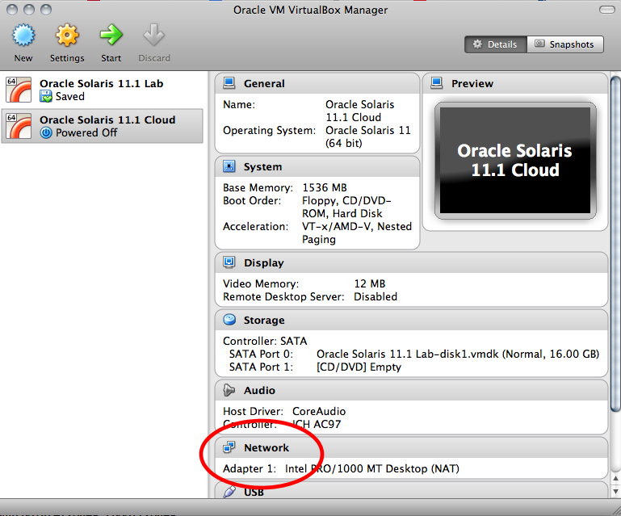Here is only one network configured. Press "Network".
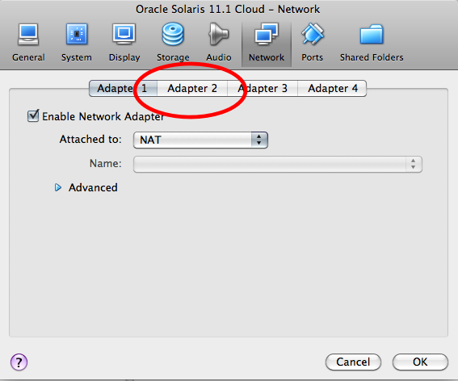Only one NIC is enabled. Press "Adapter 2".
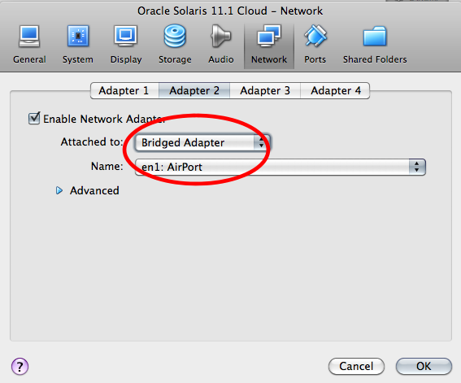Make sure you've chosen "Bridged Ethernet" for the second adapter.
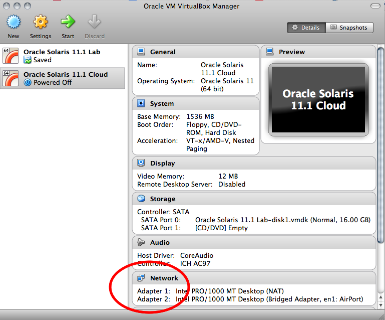Here is how it should look like with two networks.
After this is done, boot your Oracle Solaris 11 virtual machine again and check with 'dladm show-phys' that you have two network interfaces now.
Most likely, now net1 is already used by the global zone because it had received its IP address from your local DHCP server. Check it:
root@solaris:~# ipadm show-addr net1 ADDROBJ TYPE STATE ADDR net1/v4 dhcp ok 192.168.1.114/24 net1/v6 addrconf ok fe80::a00:27ff:fe42:ee04/10
To be able to use the datalink net1 in our webzone we have to disable the IP stack associated with it:
root@solaris:~# ipadm delete-ip net1 root@solaris:~# ipadm show-addr net1 ipadm: cannot get address information: No such interface
At the same time net1 still exists as datalink:
root@solaris:~# dladm show-link net1 LINK CLASS MTU STATE OVER net1 phys 1500 up --
OK, net1 is ready for use by our zone. Now we will create a virtual Ethernet switch, or etherstub.
root@solaris:~# dladm create-etherstub vswitch0
Then we create a Virtual NIC (VNIC) for internal connections which is connected to that virtual switch.
root@solaris:~# dladm create-vnic -l vswitch0 webint0
Now we have two network interfaces for use in this zone.
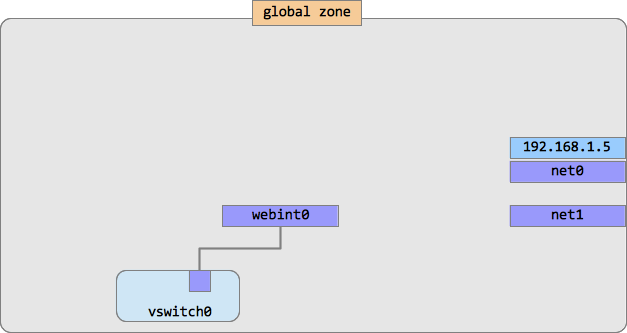
At this step we'll configure our web layer zone which is called webzone.
root@solaris:~# zonecfg -z webzone zonecfg:webzone> create zonecfg:webzone> set zonepath=/zones/webzone zonecfg:webzone> add net zonecfg:webzone:net> set physical=webint0 zonecfg:webzone:net> end zonecfg:webzone> add net zonecfg:webzone:net> set physical=net1 zonecfg:webzone:net> end zonecfg:webzone> exit
Zone is configured, but not installed yet. We can install it right now, but in that case after the first boot we will have to login into it and create a system profile which includes hostname, time zone, root password etc. Not very convenient. We want to have our zone ready to use right after the first boot, so we will create its profile before the installation and then use it. This way it is also pretty easy to automate the process of future zone creation.
Use the sysconfig command to create a system profile for webzone:
root@solaris:~# sysconfig create-profile -o /root/webzone-profile.xml
In the dialog screens set the following system's parameters:
Computer Name: webzone Network connection: None (we will configure networking later from within the zone) Time Zone: select your time zone (hint: when selecting the country, press its first letter, e.g. U for Unites States) Root password: solaris1 User real name: Zone User User id: zuser User password: oracle1 everything else: accept the defaults, just press F2 or ESC-2 to continue.
And now install the zone:
root@solaris:~# zoneadm -z webzone install -c /root/webzone-profile.xml
It will take about 10 minutes depending on your computer and network connection.
When the installation is completed we have to 1) configure the zone's networking and 2) install the necessary packages. Let's start with the networking part.
root@solaris:~# zoneadm -z webzone boot ...wait a couple of minutes... root@solaris:~# zlogin -C webzone [Connected to zone 'webzone' console] Hostname: webzone webzone console login: zuser Password: oracle1 (not displayed) Last login: Thu Apr 25 11:54:37 on console Oracle Corporation SunOS 5.11 11.1 September 2012 zuser@webzone:~$ su - root@webzone:~#
Let's take a look at our network configuration.
root@webzone:~# ipadm NAME CLASS/TYPE STATE UNDER ADDR lo0 loopback ok -- -- lo0/v4 static ok -- 127.0.0.1/8 lo0/v6 static ok -- ::1/128 root@webzone:~# dladm LINK CLASS MTU STATE OVER net1 phys 1500 up -- webint0 vnic 9000 unknown ? net0 vnic 1500 up ?
OK, we don't have any IP addresses configured, but we have three datalinks available. Why three? We have configured only two interfaces using zonecfg. The third network interface, net0, is configured for us automatically. Even if we didn't configure any network in zonecfg, we would still have an automatic datalink net0.
Now let's configure our IP interfaces for this zone. We need one interface to communicate with the outside world and we are going to use net1 for that. I am going to use my home router's DHCP server to get the address, so I configure net1 in the following way:
root@webzone:~# ipadm create-ip net1 root@webzone:~# ipadm create-addr -T dhcp net1 Jun 25 14:51:07 webzone in.routed[19810]: route 0.0.0.0/8 --> 0.0.0.0 nexthop is not directly connected net1/v4 root@webzone:~# ipadm NAME CLASS/TYPE STATE UNDER ADDR lo0 loopback ok -- -- lo0/v4 static ok -- 127.0.0.1/8 lo0/v6 static ok -- ::1/128 net1 ip ok -- -- net1/v4 dhcp ok -- 192.168.1.114/24
Looks good so far. Check if you can ping your router:
root@webzone:~# ping 192.168.1.1 ping: sendto Network is unreachable
What?? Is something wrong with my routing table? Check it:
root@webzone:~# netstat -nr Routing Table: IPv4 Destination Gateway Flags Ref Use Interface -------------------- -------------------- ----- ----- ---------- --------- default 192.168.1.1 UG 1 0 net1 127.0.0.1 127.0.0.1 UH 2 74 lo0 192.168.1.0 192.168.1.114 U 3 1 net1 Routing Table: IPv6 Destination/Mask Gateway Flags Ref Use If --------------------------- --------------------------- ----- --- ------- ----- ::1 ::1 UH 2 0 lo0
No, it looks good! What's the problem then? The answer is: "Secure by Default" mode in Solaris which enables strict firewall rules automatically when you manually create a network interface. Check the firewall configuration:
root@webzone:~# ipfstat -io block out log all pass out quick on lo0 all pass out quick proto udp from any to any port = bootps block in log all pass in quick on lo0 all pass in quick proto udp from any to any port = bootpc
The firewall is enabled and it blocks all our connections! Interesting to note that in Solaris 11 we use "exclusive IP" configuration by default with zones and that allows you to configure firewall rules on a per-zone basis. For our lab we will just disable the firewall service, but in real life you should implement some real filtering rules according to your security policy.
root@webzone:~# svcadm disable svc:/network/ipfilter root@webzone:~# ping 192.168.1.1 192.168.1.1 is alive root@webzone:~# ping 8.8.8.8 8.8.8.8 is alive
OK, not only our local router is accessible, but also the outside network (Google's DNS server) can be reached as well. What about Oracle Solaris repository? Can we ping oracle.com?
root@webzone:~# ping oracle.com ping: unknown host oracle.com
That means that our DNS server is not configured. In Solaris 11 some changes were introduced in configuring network naming services. Now it's not enough just to edit /etc/resolv.conf file to get it done. In Solaris 11 services' configurations are stored within those services, not separately from them. This makes services framework more robust and less error-prone. So, we have to change the dns/client service's configuration.
root@solaris:~# svccfg -s dns/client 'setprop config/nameserver = net_address: 192.168.1.1' root@solaris:~# svccfg -s name-service/switch 'setprop config/host = astring: "files dns" ' root@solaris:~# svcadm refresh name-service/switch root@solaris:~# svcadm refresh dns/client root@webzone:~# svcadm disable dns/client root@webzone:~# svcadm enable dns/client root@webzone:~# ping oracle.com oracle.com is alive
Now we have to configure another interface for our internal communications. We have webint0 datalink available for that. Let's create an IP interface on top of webint0 and then assign the IP address to it.
root@webzone:~# ipadm create-ip webint0 root@webzone:~# ipadm create-addr -a local=10.0.3.10/24 webint0/v4 root@webzone:~# ipadm NAME CLASS/TYPE STATE UNDER ADDR lo0 loopback ok -- -- lo0/v4 static ok -- 127.0.0.1/8 lo0/v6 static ok -- ::1/128 net1 ip ok -- -- net1/v4 dhcp ok -- 192.168.1.114/24 webint0 ip ok -- -- webint0/v4 static ok -- 10.0.3.10/24
To finish with the networking part, let's add hostnames of our zones to /etc/hosts. We will need this for the Wordpress installation.
root@webzone:~# echo '10.0.3.10 webzone' >> /etc/hosts root@webzone:~# echo '10.0.3.11 dbzone' >> /etc/hosts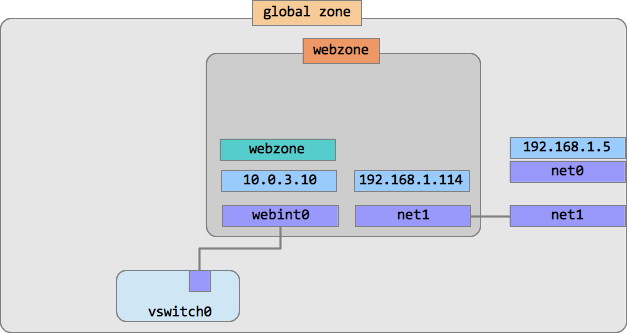
Now we can install packages. We could install separate sets of packages into webzone and dbzone, but for simplicity sake we will install the full set of AMP (Apache, MySQL, PHP) packages into webzone and then clone it into dbzone. We will use the 'pkg' command which is new in Solaris 11.
root@webzone:~# pkg install amp
Check:
root@webzone:~# pkg list *apache* root@webzone:~# pkg list *php* root@webzone:~# pkg list *mysql*
Make sure all the packages have the letter 'i' in the right column, which means "installed".
Start the web server service and check if it's running OK.
root@webzone:~# svcadm enable apache22 root@webzone:~# svcs apache22 STATE STIME FMRI online 12:59:06 svc:/network/http:apache22
In your Solaris desktop open the Firefox browser and enter the webzone's external IP address (the one assigned to net1, in my case it's 192.168.1.114) into the address line. The page should read "It works!".
Now our webzone is fully configured. In the next step of this lab we are going to clone it to create dbzone. To clone a zone we have to halt it first.
root@webzone:~# exit root@solaris:~# zoneadm -z webzone halt
At the next step we will create a database server zone. Instead of installing it (and waiting another 10 minutes) we will just clone our existing zone to save time and disk space. So, we repeat the first two steps (configuration and profile creation) and then replace the third one with the cloning operation. But before that we have to create a virtual NIC which we will use inside the zone.
We want the database zone to be connected only internally to webzone, so we'll create a virtual NIC which is connected to the virtual switch we have created before.
root@solaris:~# dladm create-vnic -l vswitch0 dbint0
As this zone will be running the database part of our application, we called it dbzone. In this configuration we set the path where the zone will be located (/zones/dbzone), its network interface (dbint0) and also we assign the dataset we have created in the very beginning of the lab (rpool/mydata) to use inside the zone.
root@solaris:~# zonecfg -z dbzone zonecfg:dbzone> create zonecfg:dbzone> set zonepath=/zones/dbzone zonecfg:dbzone> add net zonecfg:dbzone:net> set physical=dbint0 zonecfg:dbzone:net> end zonecfg:dbzone> add dataset zonecfg:dbzone:dataset> set name=rpool/mydata zonecfg:dbzone:dataset> end zonecfg:dbzone> exit
Next, we have to create the zone's profile where we configure networking, passwords, time zone etc. It's very similar to the one we have created for webzone.
root@solaris:~# sysconfig create-profile -o /root/dbzone-profile.xml
In the dialog screens set the following system's parameters (use F2 or ESC-2 to go from screen to screen):
Computer Name: dbzone Network connection: None Time Zone: select your time zone (hint: when selecting a country, press its first letter, e.g. U for Unites States) Root password: solaris1 User real name: Zone User User id: zuser User password: oracle1 everything else: accept the defaults, just press F2 or ESC-2 to continue.
Now we can clone webzone into dbzone:
root@solaris:~# zoneadm -z dbzone clone -c /root/dbzone-profile.xml webzone
How long did it take? It was much faster than initial installation, wasn't it?
You may want to check the disk sizes of both zones:
root@solaris:~# zfs list rpool/zones rpool/zones/webzone rpool/zones/dbzone NAME USED AVAIL REFER MOUNTPOINT rpool/zones 624M 8.45G 33K /zones rpool/zones/dbzone 363K 8.45G 35K /zones/dbzone rpool/zones/webzone 624M 8.45G 33K /zones/webzone
Isn't it cool to have two zones installed using disk space of only one?
Boot both zones and then login into dbzone to check if everything is all right.
root@solaris:~# zoneadm -z webzone boot root@solaris:~# zoneadm -z dbzone boot ...You may need to wait for a couple of minutes or more... root@solaris:~# zlogin -C dbzone [Connected to zone 'dbzone' console] Hostname: dbzone Apr 25 16:19:39 dbzone sendmail[3606]: My unqualified host name (dbzone) unknown; sleeping for retry dbzone console login: zuser Password: oracle1 (not displayed) Last login: Thu Apr 25 11:54:37 on console Oracle Corporation SunOS 5.11 11.1 September 2012 zuser@dbzone:~$ su - root@dbzone:~#
Check what was cloned from webzone. Remember, we have installed apache, php and mysql paskages in webzone? Check if they are installed here:
root@dbzone:~# pkg list *apache* root@dbzone:~# pkg list *php* root@dbzone:~# pkg list *mysql*
Yes, they are! But wait, there is more! Even the webserver is up and running in our cloned zone:
root@dbzone:~# svcs apache22 STATE STIME FMRI online 13:07:06 svc:/network/http:apache22
We don't need it here, in the database zone. Stop it:
root@dbzone:~# svcadm disable apache22
We haven't configured the networking part in the system profile. It's time to do it now.
root@dbzone:~# ipadm create-ip dbint0 root@dbzone:~# ipadm create-addr -a local=10.0.3.11/24 dbint0/v4 root@dbzone:~# ipadm NAME CLASS/TYPE STATE UNDER ADDR dbint0 ip ok -- -- dbint0/v4 static ok -- 10.0.3.11/24 lo0 loopback ok -- -- lo0/v4 static ok -- 127.0.0.1/8 lo0/v6 static ok -- ::1/128 root@dbzone:~# ping 10.0.3.10 root@dbzone:~# ping webzone webzone is alive
That's all we need--to be able to talk to webzone. Note that we can access webzone by name: that means we have cloned the /etc/hosts file as well. Very convenient!
We have to start the database service in this zone, similarly to the web server we have started in webzone. But before that we have to configure MySQL to use our ZFS dataset instead of the default /var/mysql/data. First, check if it's there:
root@dbzone:~# zfs list NAME USED AVAIL REFER MOUNTPOINT mydata 31K 7.64G 31K /mydata rpool 41.7M 7.64G 31K /rpool rpool/ROOT 41.6M 7.64G 31K legacy rpool/ROOT/solaris-0 41.6M 7.64G 658M / rpool/ROOT/solaris-0/var 408K 7.64G 53.7M /var rpool/VARSHARE 20K 7.64G 45K /var/share rpool/export 74.5K 7.64G 32K /export rpool/export/home 53.5K 7.64G 32K /export/home rpool/export/home/zuser 32.5K 7.64G 32.5K /export/home/zuser
Now we have to change ownership and permissions for this directory:
root@dbzone:~# chown -R mysql:mysql /mydata root@dbzone:~# chmod -R 700 /mydata
Tell MySQL service that we are going to use different directory for data:
root@dbzone:~# svccfg -s mysql:version_51 setprop mysql/data=/mydata root@dbzone:~# svcadm refresh mysql:version_51
Now we can enable the MySQL service and check if it works:
root@dbzone:~# svcadm enable mysql root@dbzone:~# mysql -u root Welcome to the MySQL monitor. Commands end with ; or \g. Your MySQL connection id is 1 Server version: 5.1.37 Source distribution Type 'help;' or '\h' for help. Type '\c' to clear the current input statement. mysql>
Great, the database server works too!
Time to install the application. While we are still in the database zone and logged into the MySQL monitor, let's create the database we need for Wordpress (we call it wp01 here).
mysql> create database wp01;
Add access privileges for user 'wordpress' from host 'webzone' with password 'oracle1':
mysql> grant all privileges on wp01.* to 'wordpress'@'webzone' identified by 'oracle1'; mysql> flush privileges; mysql> quit; root@dbzone:~#
That's all for the database part.
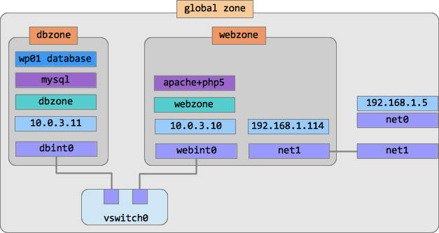root@dbzone:~# exit root@solaris:~#
Now log in to webzone, download and unpack the Wordpress distribution.
root@solaris:~# zlogin webzone root@webzone:~# wget http://wordpress.org/latest.zip root@webzone:~# unzip latest.zip
Now we have to enter our database parameters into Wordpress configuration. Rename the wp-config-sample.php file to wp-config.php.
root@webzone:~# cd wordpress root@webzone:~/wordpress# mv wp-config-sample.php wp-config.php
Enter database details in wp-config.php
root@solaris:~/wordpress# vi wp-config.php
Edit the following lines:
// ** MySQL settings - You can get this info from your web host ** //
/** The name of the database for WordPress */
define('DB_NAME', 'wp01');
/** MySQL database username */
define('DB_USER', 'wordpress');
/** MySQL database password */
define('DB_PASSWORD', 'oracle1');
/** MySQL hostname */
define('DB_HOST', 'dbzone');
Now we have to copy the Wordpress distribution to the webserver document root. We can do it from the global zone:
root@webzone:~/wordpress# mkdir /var/apache2/2.2/htdocs/blog/ root@webzone:~/wordpress# cp -r * /var/apache2/2.2/htdocs/blog/
Now your can install Wordpress from your browser, either from your global zone or from other computer in the same network. Open the browser and enter the URL http://192.168.1.114/blog/wp-admin/install.php (replace 192.168.1.114 with your net1 address). The rest is easy. Enter the name of the blog, your administrator's login name ('admin' by default) and the password ('solaris1', for example).
Now you have to wait for a while (couple of minutes or so) until you see this:
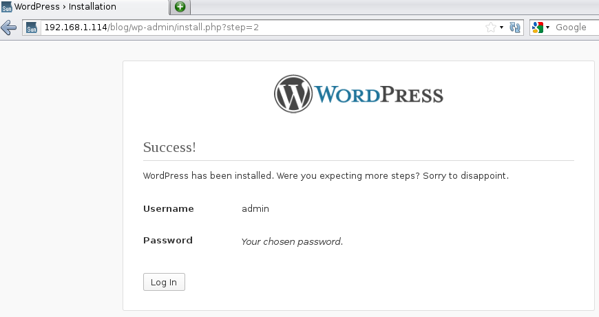Now check if it works. Log in with your admin login name and password:
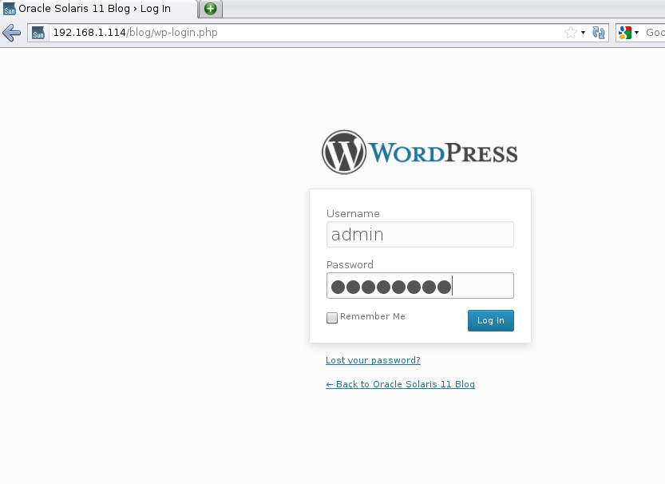After the login you should see your blog's dashboard:
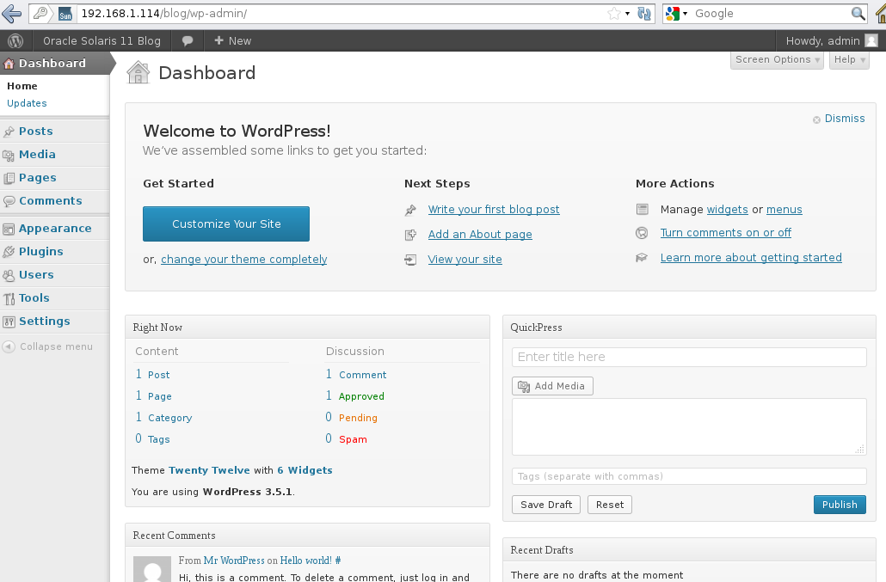Click on "Oracle Solaris 11 Blog" in the top left corner and you will see your blog:
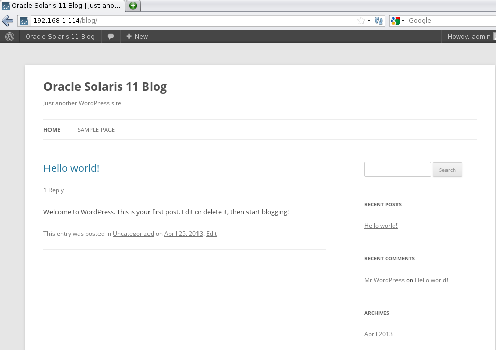Success!
Here is our final architecture:
Now afer we have installed our web application and put it into production, we want to know how much resources it uses. Eventually, running our "cloud in a box" we will be able to report to our customers how much resources they use and even charge them for that. So better to be prepared.
In Oracle Solaris 11 we have several tools to track processes running in zones. Some familiar commands now include a -Z parameter to help you to monitor zones behavior. Try ps -efZ and prstat -Z to take a look. Another great Solaris 11 tool was created specifically to monitor zones resource usage: zonestat. Give it a try:
root@solaris:~# zonestat -z dbzone,webzone 5
Collecting data for first interval...
Interval: 1, Duration: 0:00:05
SUMMARY Cpus/Online: 1/1 PhysMem: 2047M VirtMem: 3071M
---CPU---- --PhysMem-- --VirtMem-- --PhysNet--
ZONE USED %PART USED %USED USED %USED PBYTE %PUSE
[total] 0.05 5.45% 968M 47.3% 1251M 40.7% 0 0.00%
[system] 0.01 1.51% 287M 14.0% 735M 23.9% - -
dbzone 0.00 0.16% 73.8M 3.60% 66.3M 2.16% 0 0.00%
webzone 0.00 0.13% 73.9M 3.61% 67.2M 2.18% 0 0.00%
Note the parameters you can observe with zonestat: CPU utilization, physical and virtual memory usage, network bandwidth utilization. In addition to that, it can produce periodic reports with max and average numbers for each parameter. It also can produce machine-parsable output which can be stored in spreadsheets and databases. It can be even piped into another program, such as gnuplot to produce nice looking charts. We will use this feature in the next part of our lab when we will be creating our own application package.
The Image Packaging System (IPS) is the network based package management system included in Oracle Solaris 11. It provides a framework for complete software lifecycle management such as installation, upgrade and removal of software packages. IPS takes advantage of ZFS using ZFS boot environments, such that administrators can update a system while running production services and then boot into the new boot environment when a planned maintenance window comes along. IPS uses package repositories to install software over the network, and provides for automatic package dependencies. We have covered this topic in our previous Virtual SysAdmin Day (you can find its archived materials on Youtube).
In this session we will be taking the zoneplot, a command line utility for measuring and plotting zone statistics, and creating an IPS package for it that we can install onto the system. This is a very simple example to give you an overview of the packaging process, but it's recommended you take at look at the IPS Developer Guide.
For this package we will need two scripts. First script accepts a standard Unix pipe stream and shows its data using gnuplot. Second script converts the zonestat outpout into a stream readable by the first script. Both scripts are publicly available. Download them from the Internet:
root@solaris:~# wget http://www.lysium.de/sw/driveGnuPlotStreams.pl root@solaris:~# wget http://zoneplot.googlecode.com/files/zoneplot
IPS uses package manifests to describe how a package is assembled - what files or directories are included, what dependencies the package has, and basic information about a package such as name, version and description. Fortunately we can generate much of this manifest using IPS and pointing it to a location, or proto area, which contains all the files and directories that we want to include in this package. We'll start by creating this proto area and laying things out how we'd expect the package to look like:
root@solaris:~# mkdir -p PROTO/usr/bin
In this case we're creating a PROTO directory in $HOME. Within that directory, we have a /usr/bin layout. We'll copy our scripts into this proto area and make them executable:
root@solaris:~# cp zoneplot driveGnuPlotStreams.pl PROTO/usr/bin root@solaris:~# chmod a+x PROTO/usr/bin/*
We can see in the following graphic how our directory is now laid out
zoneplot driveGnuPlotStreams.pl
\ /
bin
|
usr
|
PROTO
Let's generate an initial manifest:
root@solaris:~# pkgsend generate PROTO > zoneplot.p5m.gen
Let's look at the contents:
root@solaris:~# cat zoneplot.p5m.gen dir group=bin mode=0755 owner=root path=usr dir group=bin mode=0755 owner=root path=usr/bin file usr/bin/driveGnuPlotStreams.pl group=bin mode=0755 owner=root path=usr/bin/driveGnuPlotStreams.pl file usr/bin/zoneplot group=bin mode=0755 owner=root path=usr/bin/zoneplot
As you'll see here there are two sets of 'actions' - two directory actions that describe usr and usr/bin directories, and two file actions that describe zoneplot and driveGnuPlotStreams.pl. These are the contents of our package. Usual IPS practice encourages us to not include directory actions that are already defined on the system. We will remove them.
root@solaris:~# vi zoneplot.p5m.gen root@solaris:~# cat zoneplot.p5m.gen file usr/bin/driveGnuPlotStreams.pl group=bin mode=0755 owner=root path=usr/bin/driveGnuPlotStreams.pl file usr/bin/zoneplot group=bin mode=0755 owner=root path=usr/bin/zoneplot
The next thing that we need to do is to add some basic meta-information about the package - including package name, package version and package description. Add the following lines to our manifest:
root@solaris:~# vi zoneplot.p5m.gen root@solaris:~# cat zoneplot.p5m.gen set name=pkg.fmri value=zoneplot@1.0,5.11-0 set name=pkg.summary value="zoneplot utility" set name=pkg.description value="Utility to plot the output of zone statistics" set name=info.classification value="org.opensolaris.category.2008:Applications/System Utilities" file usr/bin/driveGnuPlotStreams.pl group=bin mode=0755 owner=root path=usr/bin/driveGnuPlotStreams.pl file usr/bin/zoneplot group=bin mode=0755 owner=root path=usr/bin/zoneplot
IPS has automatic package dependency checking for all package management operations on the system. For example, if a package requires other packages to work it will automatically install these. We will do the same for zoneplot. We will first try and detect what package dependencies this package might have using the pkgdepend generate command:
root@solaris:~# pkgdepend generate -md PROTO zoneplot.p5m.gen > zoneplot.p5m.dep root@solaris:~# cat zoneplot.p5m.dep set name=pkg.fmri value=zoneplot@1.0,5.11-0 set name=pkg.summary value="zoneplot utility" set name=pkg.description value="Utility to plot the output of zone statistics" set name=info.classification value="org.opensolaris.category.2008:Applications/System Utilities" file usr/bin/zoneplot path=usr/bin/zoneplot owner=root group=bin mode=0755 file usr/bin/driveGnuPlotStreams.pl path=usr/bin/driveGnuPlotStreams.pl owner=root group=bin mode=0755 depend fmri=__TBD pkg.debug.depend.file=perl pkg.debug.depend.path=usr/bin pkg.debug.depend.reason=usr/bin/driveGnuPlotStreams.pl pkg.debug.depend.type=script type=require depend fmri=__TBD pkg.debug.depend.file=bash pkg.debug.depend.path=usr/bin pkg.debug.depend.reason=usr/bin/zoneplot pkg.debug.depend.type=script type=require
You'll see that we have detected that there are two files in this package (zoneplot and driveGnuPlotStreams.pl) that have external dependencies. zoneplot is a bash script and thus depends on bash. driveGnuPlotStreams.pl is a perl script and thus depends on perl. While both of these are already installed by default on Oracle Solaris 11, it's good practice to make sure we define these dependencies.
The next step is resolving these dependencies into the packages they are delivered in. We need to determine what packages bash and perl are a part of. We use the pkgdepend resolve command to achieve this.
root@solaris:~# pkgdepend resolve -m zoneplot.p5m.dep root@solaris:~# cat zoneplot.p5m.dep.res (NOTE the .res extension!) set name=pkg.fmri value=zoneplot@1.1,5.11-0 set name=pkg.summary value="zoneplot utility" set name=pkg.description value="Utility to plot the output of zone statistics" set name=info.classification value="org.opensolaris.category.2008:Applications/System Utilities" file usr/bin/zoneplot path=usr/bin/zoneplot owner=root group=bin mode=0755 file usr/bin/driveGnuPlotStreams.pl path=usr/bin/driveGnuPlotStreams.pl owner=root group=bin mode=0755 depend fmri=pkg:/runtime/perl-512@5.12.4-0.175.1.0.0.24.0 type=require depend fmri=pkg:/shell/bash@4.1.9-0.175.1.0.0.24.0 type=require
We can see that these dependencies have been resolved to pkg:/runtime/perl-512 and pkg:/shell/bash. While IPS does a good job at trying to detect dependencies by looking at files (ELF headers, #! script definitions, etc.), sometimes we will have to manually provide additional dependencies. In this case, we know that this utility depends on gnuplot to plot the statistics graphically, so we will add this to our manifest.
First we have to figure out the gnuplot's FMRI:
root@solaris:~# pkg search -o pkg.shortfmri gnuplot PKG.SHORTFMRI pkg:/image/gnuplot@4.6.0-0.175.1.0.0.24.0
Now copy this FMRI into the zoneplot.p5m.dep.res file as following:
root@solaris:~# vi zoneplot.p5m.dep.res root@solaris:~# cat zoneplot.p5m.dep.res set name=pkg.fmri value=zoneplot@1.1,5.11-0 set name=pkg.summary value="zoneplot utility" set name=pkg.description value="Utility to plot the output of zone statistics" set name=info.classification value="org.opensolaris.category.2008:Applications/System Utilities" file usr/bin/zoneplot path=usr/bin/zoneplot owner=root group=bin mode=0755 file usr/bin/driveGnuPlotStreams.pl path=usr/bin/driveGnuPlotStreams.pl owner=root group=bin mode=0755 depend fmri=pkg:/runtime/perl-512@5.12.4-0.175.1.0.0.24.0 type=require depend fmri=pkg:/shell/bash@4.1.9-0.175.1.0.0.24.0 type=require depend fmri=pkg:/image/gnuplot@4.6.0,5.11-0.175.1.0.0.24.0 type=require
Now that we have our PROTO area and manifest completed, it is now time to publish this package to an IPS repository. First we will need to create a repository to host this package - it's best practice not to publish to the existing solaris default publishers even if you have a copy of them locally.
Let's first create a ZFS data set to host our repository:
root@solaris:~# zfs create -o mountpoint=/repository rpool/repository
And now create an IPS package repository there:
root@solaris:~# pkgrepo create /repository
We will need to set the publisher prefix of this repository so that we can add it to our publisher configuration on our system. We will call it 'zoneplot':
root@solaris:~# pkgrepo -s /repository set publisher/prefix=zoneplot
Now we are ready to publish our package:
root@solaris:~# pkgsend -s /repository publish -d PROTO zoneplot.p5m.dep.res pkg://zoneplot/zoneplot@1.0,5.11-0:20130524T160043Z PUBLISHED
We can confirm this by taking a look at the status of the repository:
root@solaris:~# pkgrepo -s /repository info PUBLISHER PACKAGES STATUS UPDATED zoneplot 1 online 2013-05-24T16:00:43.695049Z
We can query the package now within the repository:
root@solaris:~# pkg info -g /repository zoneplot
Name: zoneplot
Summary: zoneplot utility
Description: Utility to plot the output of zone statistics
Category: Applications/System Utilities
State: Not installed
Publisher: zoneplot
Version: 1.0
Build Release: 5.11
Branch: 0
Packaging Date: May 24, 2013 04:00:43 PM
Size: 6.04 kB
FMRI: pkg://zoneplot/zoneplot@1.2,5.11-0:20130524T160043Z
Let's go ahead and add this publisher to our configuration:
root@solaris:~# pkg set-publisher -p /repository root@solaris:~# pkg publisher PUBLISHER TYPE STATUS P LOCATION solaris origin online F http://pkg.oracle.com/solaris/release zoneplot origin online F file:///repository
And now finally install zoneplot (you will see that it will pull in a number of package dependencies):
root@solaris:~# pkg install zoneplot
Now you can finally run this small application to watch the resource usage. Open another terminal window and start the application (make sure you are doing this as user "lab").
lab@solaris:~$ zoneplot
In this introductory lab we have build a basic two-layer application architecture using Oracle Solaris 11 virtualization features. So far we have learned:
zonestatNow you are ready to explore more advanced Oracle Solaris features. Some ideas you might want to try using your "cloud-in-a-box" installation:
webzone to be able to access the outside world from dbzone All these topics are described in various articles, blogs and how-to's at Oracle Technology Network. We wish you an interesting journey!